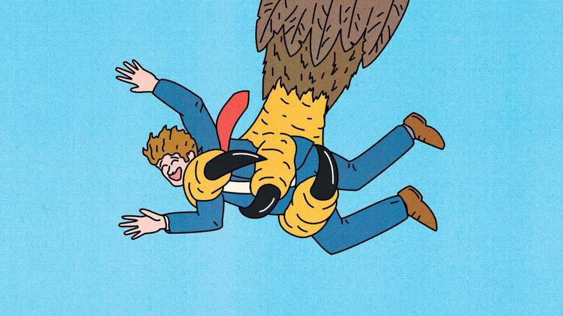
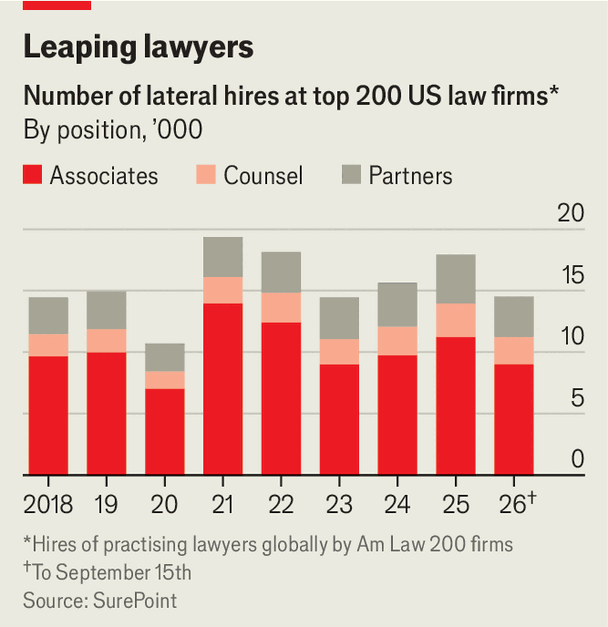

Big law is being shaken up—and not by AI
A wave of poaching may presage a transformation of American law firms’ business model

Oct 1st 2026
American law firms were once small affairs, often employing fewer than five lawyers. Then in 1903 an enterprising advocate named Paul Cravath decided his shop would grow larger. He sought to hire the brightest minds straight from law school, push them hard for several years and make the best of them partners in the firm. The result, as Wayne Karl Hobson, a historian, wrote some 70 years later, was droves of “anonymous organisation men” who moved on “only if the firm informed them it could not advance them”. Nearly every American law firm would adopt the “Cravath system”.

Now the system is buckling—and the partnership model with it. Big-name transfers have been making the world of white-shoe law look like a sports league. Between January and mid-September more than 3,200 partners joined one of America’s 200 top-grossing firms, more than in all of 2021, according to SurePoint, a data firm (see chart). Switching used to be confined to second-tier outfits, but has spread to the most prestigious. In July William Savitt, the co-head of the litigation department at Wachtell, Lipton, Rosen & Katz, quit for Gibson Dunn. Even Cravath, Swaine & Moore (its name since 1944) has joined in, poaching Michael Aiello, a star mergers-and-acquisitions lawyer, from Weil Gotshal in September.
The Cravath system has come under pressure before. Older lawyers recall the cautionary tale of Finley Kumble, an upstart that in the mid-1980s became America’s second-largest law firm by poaching star partners. In 1988 it collapsed under the strain of their pay packages and infighting. In one quarrel, a lawyer broke another’s glass-topped coffee table.
In the past decade, however, the model has come under greater threat, with the rise of Kirkland & Ellis. The Chicago-founded firm has also grown rapidly through lateral hiring, but enjoys advantages that Finley Kumble did not. One is its dominance of the lucrative business of advising private-equity titans. Another is its use of “salaried partners”, who unlike traditional equity partners have no ownership stake. In 2025 Kirkland hauled in revenue of $10.6bn, a record for the industry, and could pay its lawyers record sums.
Rivals have had to take notice. Annual pay above $10m used to be shocking. Now rainmakers switching firms can command $20m or even $30m. Headhunters say that many partners move in search of a change in culture or practice area. Fellow lawyers are more cynical. “I’ve heard people say, ‘I wasn’t treated fairly at my firm.’ What the hell does that mean?” notes a litigator at a leading shop. “It’s all about the money.”
For other firms, Kirklandisation has become almost a necessity. Clients increasingly expect them to provide global coverage in a vast range of specialities. Hires are therefore often meant to anchor a new office or field of expertise and bring in new business. Because the American Bar Association, a professional body, prevents non-compete agreements, lawyers are free to take their Rolodexes to a new job. Moreover, as firms grow, many clients have become attached to partners rather than firms. “You used to hire firms,” says a New York partner. “Now you hire individuals.”
Individuals can change more than the bottom line. Many partners point to Scott Barshay’s move from Cravath to Paul Weiss in 2016 as a harbinger of the free-agent era. By all accounts Mr Barshay has kept raking in profits. He has also transformed Paul Weiss, which he now chairs. The New York Times reported this year that he was key to its reaching a deal with Donald Trump’s administration, after the president signed an executive order targeting the firm in March 2025. Among other things, Paul Weiss agreed to carry out pro bono work for causes approved by the administration. Before the 2024 presidential election, its partners donated more to Kamala Harris than any of their peers did.
Poaching does not always work. More than 60% of lateral hires fail to bring in the business they promise, estimates Decipher Investigative Intelligence, a research firm. Half leave within five years. Many moves come with one- to three-year guarantees, allowing firms to part ways with underperforming stars, notes Scott Yaccarino, a recruiter. But placing several bets worth tens of millions can cost dear.
Still, many managing partners feel they must poach or die. After suffering several defections and failing to make commensurate hires, Weil Gotshal is reportedly shopping around for a merger. Even Wachtell may have to fully abandon both its seniority-based pay structure and its “lean and mean” operation. That will mean an industry with fewer and bigger firms, which will look more like Kirkland.
For partners accustomed to the clubby comfort of the past, such changes are unsettling. Some lawyers, particularly litigators, are leaving big firms to found tiny boutiques that recall the 19th-century world of American advocacy. Others are racing into the future. David Fox, formerly of Kirkland, has started one of several “AI-first” firms that employ a few lawyers and leave the rest to bots. Mr Fox has claimed his software can perform as well as a lawyer on the verge of partnership.
Kirklandisation may merely have exposed the Cravath system’s internal flaws. As law firms grow, to more than 100 or so partners, they tend to end up being run by a small group. Kirkland’s salary model then looks tempting. For years some in the industry have speculated that the most successful firms may one day seek to get rid of their current partnership structures entirely and seek outside investors in order to gobble up smaller competitors. Investment banking ditched large-scale equity partnership and consolidated long ago. Big Law may soon follow. ■